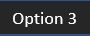
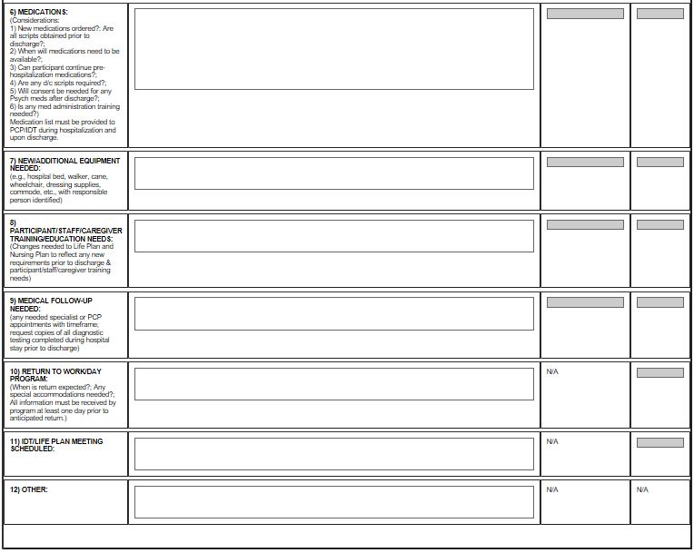

Comprehensive Care Management Scenario 6
Look at the following situations. In which situation should the care manager fill out the Transition Plan form in Medisked?
 Individual residing in a community residence is admitted to the hospital
Individual residing in a community residence is admitted to the hospital Minor childing/adult child residing at home with family is admitted to the hospital
Minor childing/adult child residing at home with family is admitted to the hospital- Adult living independently is admitted to the hospital
